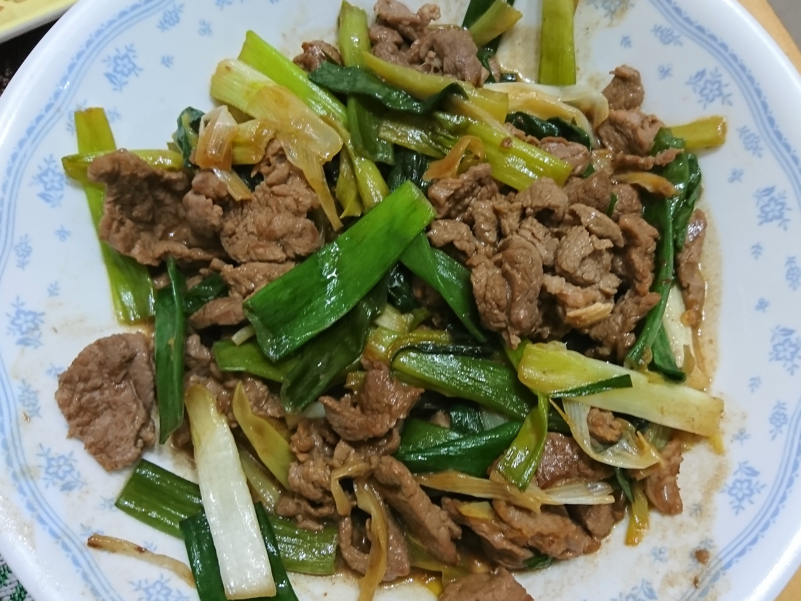
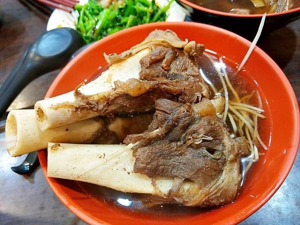

1. 羊肉燴飯
羊肉燴飯的歷史，雖然沒有單一明確記載，但可以追溯到河南的「燴面」文化，在抗戰時期，有廚師為應急將剩餘麵條與羊肉湯燴煮，意外風靡，成為了滋補美食，並在臺灣發展出加入在地特色（如沙茶）的風格，融合了傳統與在地風味。。
點擊查看歷史與食譜 →

2. 麻油羊肉
麻油羊肉（或羊肉爐）在台灣是冬令進補的代表，其歷史可追溯至古代漢人食補文化，但羊肉早年因腥味重較少人吃；直到清代後期與日治時期，隨著養羊風氣和技術進步，尤其在岡山、溪湖等地，羊肉爐形式在1970年代後興盛，成為結合中原食補與在地特色的普及美食。
點擊查看歷史與食譜 →

3. 蔥爆羊肉
蔥爆羊肉是一道經典台式熱炒，關鍵在於羊肉要先醃漬去腥並過油定型，再用大火與大量葱段、薑蒜、辣椒爆炒辛香料，最後快速與半熟的羊肉拌炒至全熟，讓肉質滑嫩、香氣十足。
點擊查看歷史與食譜 →

4. 當歸大骨湯
當歸大骨湯是一道溫補養身的藥膳湯品，主要以豬大骨/牛骨/雞骨為主料，搭配當歸、紅棗、枸杞等中藥材，以及薑片、米酒等調味，透過汆燙去腥、冷水下鍋慢燉的方式，煮出湯頭溫潤、藥香四溢、補氣血的美味佳湯。此湯品適合手腳冰冷、氣血不足者，尤其女性生理不調時飲用，有補血活血、滋陰潤燥的功效。
點擊查看歷史與食譜 →
課程總結：學習心得報告
在本課程中，我們不僅探索了南臺灣的在地美食文化，更學習了如何運用現代網際網路技術與 AI 工具來進行資訊的彙整與網頁視覺化呈現。
點擊閱讀完整心得報告 →